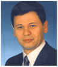

Лечение в Германии
Приняв решение о лечении в Федеративной Республике Германии, Вы оказались на пороге сложного выбора. Множество лечебных учреждений и различный спектр оказываемых ими услуг сильно осложняют эту задачу. «Ariella Treatment in Germany e.K.» образовалась для помощи иностранным больным, прибывающим на лечение в Федеративную Республику Германии.
Все сотрудники «Ariella Treatment in Germany e.K.» получили или закончили медицинское образование в Федеративной Республике Германии. В совершенстве владея как русским, так и немецким языками, мы в состоянии правильно оценить Ваше заболевание и найти клинику, наиболее подходящую для Вашего лечения.
Разумеется, что всё время пребывания на лечении в Федеративной Республике Германии Вы и сопровождающие Вас близкие находитесь под нашей постоянной опекой.
Таким образом, «Ariella Treatment in Germany e.K.» берёт на себя организацию и проведение Вашего лечения в Германии.
Михаил ЛитвакГенеральный директорИнтересные случаи:
Все интересные случаи- К нам обратился высокопоставленный чиновник из Казахстана. Теперь он считает Михаила (нашего руководителя) своим личным врачем. Некоторое время спустя на обследования и лечение прибыли его тесть, жена и трое друзей.
- Пациентке около 40 лет удалили кисту яичника, гистология показала рак, в России рекомендовали удаление матки, яичников, придатков. Пациентка приехала на контрольное обследование в Германию. Оказалось, что была доброкачественная форма рака яичников. Получилось удалить только один яичник, а после операции наша пациентка успела забеременеть, и ей сохранить беременность.
- Певица из Эстонии с раком молочной железы столкнулась с тем, что в Эстонии невозможно даже пройти МРТ. Сейчас она прошла 6 курсов химиотерапии, облучение. Надеемся, что наша пациентка выздоровеет.
- К нам обратился высокопоставленный чиновник из Казахстана. Теперь он считает Михаила (нашего руководителя) своим личным врачем. Некоторое время спустя на обследования и лечение прибыли его тесть, жена и трое друзей.
- Пациентке около 40 лет удалили кисту яичника, гистология показала рак, в России рекомендовали удаление матки, яичников, придатков. Пациентка приехала на контрольное обследование в Германию. Оказалось, что была доброкачественная форма рака яичников. Получилось удалить только один яичник, а после операции наша пациентка успела забеременеть, и ей сохранить беременность.
Схема лечения:
-
1
Вы присылаете историю болезни, исследования и снимки
Помогаем подобрать для вас наиболее подходящую клинику. Переводим Ваши документы на немецкий язык. Получаем от клиники план лечения и переводим на русский язык.
-
2
Вы отправляете предоплату
Оформляем медицинскую визу, при необходимости организуем VIIP-чартер или медицинский самолет.
-
3
Вы приезжаете на лечение
Заботимся о Вас и ваших родных, встречаем, сопровождаем, переводим и разъясняем заключения специалистов, отвечаем на все вопросы. При этом учитываем не только особенности заболевания, но и Ваши индивидуальные пожелания.
-
4
Вы завершаете лечение
Производим окончательный расчет с клиникой, отправляем Вам полный пакет счетов. Остаток средств отправляем еще до оплаты от клиники. Обеспечиваем возможность общения с Вашим лечащим врачом и после лечения
- Расчеты прозрачны:
- Вы получаете счета от клиник со стоимостью, по которой Вы бы лечились сами, наши услуги оплачиваются отдельным счетом.
- Вы можете быть уверены в адекватности стоимости, в Германии не навязывают ненужные услуги.
- Вы получаете счета от клиник со стоимостью, по которой Вы бы лечились сами, наши услуги оплачиваются отдельным счетом.
- Вы можете быть уверены в адекватности стоимости, в Германии не навязывают ненужные услуги.